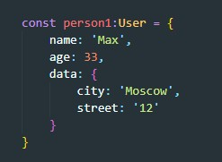
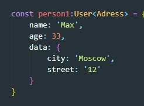
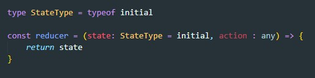

Generics — это возможность создавать компоненты, работающие не только с одним, а с несколькими типами данных
Допустим что у нас есть два типа:

Вот как будет выглядеть объект с таким типом
Но что если в свойстве data с сервера придут другие данные, что же нам придется писать еще один тип под объект с этими данными? Нет, здесь нам помогут Generics
Вот как будет выглядеть тип User с использованием Generic

Теперь при создании объекта вместо T мы будем указывать тот тип данных который нам надо
Допустим у нас есть reduser - функция которая принимает state и action и которая возвращает state. Если пришедший state undefined то reduser должен вернуть state по умолчанию он же initial state.

State это объект, а для любого объекта нам надо писать типизацию. Но у нас и так есть дефолтный state который может дать нам описание state. Что бы получить тип на основании дефолтного state мы можем использовать оператора typeof typescript
